FIRST LEGO League 2026 · Temporada BIOGLOW
Robótica com espírito de colmeia
De Picos, a Capital do Mel, para a FIRST LEGO League: um robô preto e amarelo, um projeto pelas abelhas do semiárido e uma equipe que trabalha junto.
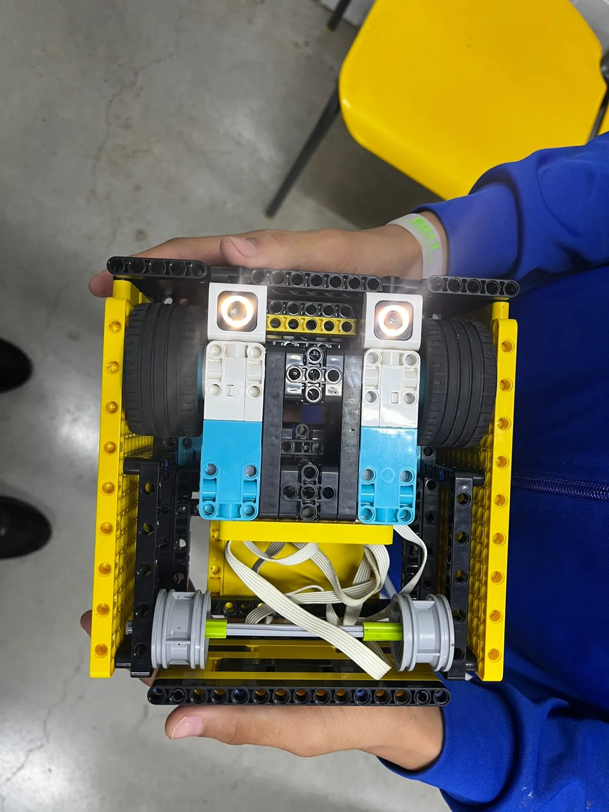
Uma equipe que funciona como uma colmeia
Somos a SESI LEGO Team, equipe de robótica da Escola SESI Wilma Catão Araújo, em Picos, no interior do Piauí. Competimos na FIRST LEGO League, que desafia equipes de estudantes a resolver problemas reais com ciência, tecnologia e trabalho em equipe.
Nossa identidade nasceu da nossa terra: o preto e o amarelo do robô representam uma abelha, em referência à apicultura de Picos, conhecida como a Capital do Mel. Como numa colmeia, cada integrante tem uma função e as decisões são tomadas em conjunto: montagem, programação, testes, pesquisa e apresentação divididos entre todos.
Na abertura da temporada, a escola organizou as frentes operacionais em duas equipes, EC Bots e SESI LEGO Team — e desde então documentamos tudo: as cinco versões do robô, as visitas, as entrevistas com especialistas e cada ajuste de programação. Este site é o nosso caderno de engenharia aberto para juízes, família e comunidade.
Membros e funções
Competidores
-
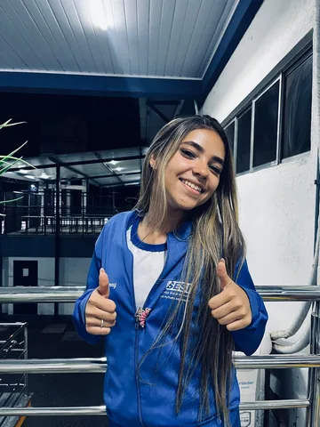
Ana Loanny
Competidora
-
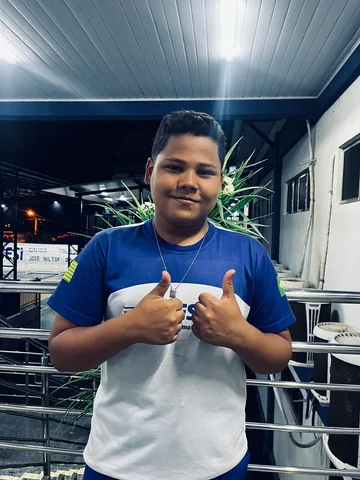
Ítalo Gabriel
Competidor
-
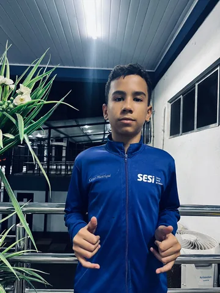
Cesar Henrique
Competidor
-
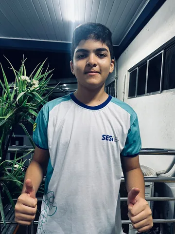
Pedro Ítalo
Competidor
-
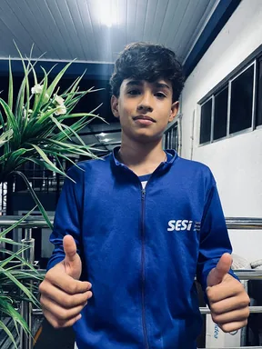
Paulo José
Competidor
Comissão técnica e mentoria
-
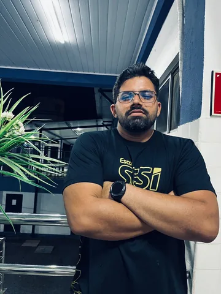
Alex
Técnico · Professor
-
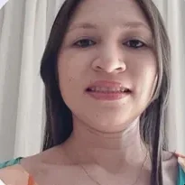
Regiane
Técnica · Professora
-
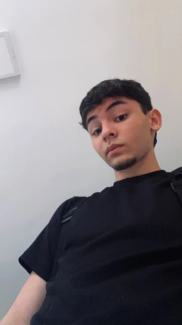
Gabriel Evêncio
Mentor
Innovation Project
Sombreamento inteligente de colmeias no semiárido nordestino
Quando as árvores do apiário perdem as folhas, as caixas das abelhas ficam expostas ao sol da estiagem. Foi desse problema real, observado em Picos, que nasceu o nosso projeto de pesquisa.
-
O problema
No semiárido nordestino, dias muito quentes e longos períodos sem chuva castigam as colmeias. Durante a estiagem, algumas árvores da Caatinga perdem as folhas e deixam as caixas expostas à radiação solar direta. As abelhas precisam manter a temperatura interna entre 34 °C e 35 °C para o desenvolvimento das crias, e o calor excessivo exige mais esforço de termorregulação, com movimento de asas e uso de água. Quando falta sombra e falta água, a colônia sofre.
Como podemos complementar a sombra natural das colmeias e oferecer uma alternativa prática para enfrentar o calor e a escassez de água durante a estiagem, mantendo a segurança das abelhas e facilitando o trabalho do apicultor?
-
Do problema amplo ao foco: o nosso pivô
Nosso primeiro ponto de partida foi a "seca verde": os impactos gerais da seca na vegetação e no alimento das abelhas. Percebemos, porém, que tentar resolver um problema tão amplo era inviável para um protótipo de engenharia — e registramos no diário de bordo uma mudança estratégica de rota.
Especificamos o problema para um gargalo pontual e prático: o estresse térmico das colmeias pela falta de sombra natural quando as árvores perdem as folhas no semiárido. De um problema grande demais, chegamos a um que conseguimos atacar de verdade.
-
A pesquisa científica
Procuramos fontes confiáveis, como a Embrapa e universidades, para entender o que realmente acontece com as colmeias no calor. Dois estudos guiaram o projeto:
- Alternativas de sombreamento para apiários (Embrapa Meio-Norte, 2011): pesquisa realizada em Castelo do Piauí que comparou árvores, cobertura de palha, tela sombrite e exposição direta ao sol. Os resultados destacaram a importância do sombreamento adequado para o desenvolvimento das crias.
- Internal water supply in Africanized beehives during the dry season in the Brazilian semiarid (2020): estudo que registrou consumo médio de 74,6 mL de água por colmeia ao dia durante a estiagem, mostrando que a água não pode ficar de fora de nenhuma solução.
-
O trabalho de campo
Visitamos o apiário de Jonildo Monteiro Luz, em Picos, no 15/10/2026, para conhecer de perto a criação de abelhas. Acompanhamos o manejo com o fumigador, usado para liberar fumaça e facilitar o trabalho com as colmeias, e conversamos sobre as dificuldades reais do apicultor na estiagem: calor e escassez de água.
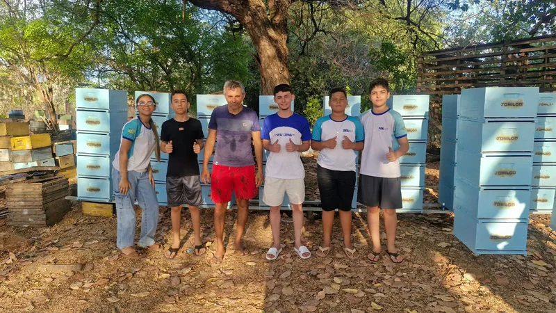
A equipe diante das colmeias no apiário de Jonildo. 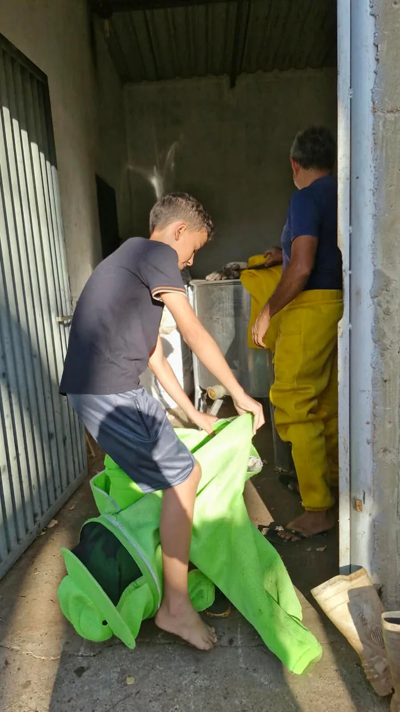
O manejo das colmeias mostrado pelo apicultor. -
Os especialistas que ouvimos
Buscamos pessoas com experiência em biologia, engenharia agronômica e apicultura para aproximar a proposta da realidade dos apiários:
- Jonildo Monteiro Luz apicultor em Picos, PI. Recebeu nossa visita no apiário, confirmou a viabilidade do sombrite para amenizar o calor das colmeias e aprovou a alternativa de estrutura fixa no lugar da sombra retrátil.
- Darcet Costa Souza engenheiro agrônomo e professor de Apicultura da UFPI, Campus Ministro Petrônio Portela, em Teresina, PI. Orientou as mudanças que simplificaram a solução: sem monitor elétrico no apiário e fim da sombra retrátil, em favor de uma estrutura fixa e prática.
- Isabel Francisca da Luz Guaraná bióloga e professora do Colégio Santa Maria, em Recife, PE. Acompanhou o desenvolvimento do projeto com conhecimentos e sugestões para o aperfeiçoamento.
- José Carlos de Carvalho Arraes biólogo, mestre em Biodiversidade, Ambiente e Saúde, atua em ecologia vegetal. Ajudou na definição da problemática, apresentando vantagens e desvantagens das ideias propostas.
- Carlos Fernando Rodrigues Guaraná professor universitário, biólogo e pesquisador da UFRPE, em Recife, PE. Mestre e doutor pela UFPE, atua há mais de 30 anos em microbiologia, controle biológico de pragas e conservação ambiental, com pesquisas e publicações científicas.
- José Breno da Cruz trabalhou na Fundação Liberato, no Rio Grande do Sul, e atualmente está aposentado. Dividiu experiência técnica com a equipe.
-
As estratégias de investigação
Organizamos o raciocínio com ferramentas que aprendemos na FLL: brainstorming para reunir ideias de todos, análise SWOT para mapear forças, fraquezas, oportunidades e ameaças, benchmarking de práticas de manejo térmico e o Lean Canvas para estruturar o projeto. E usamos a técnica dos 5 porquês para chegar à raiz do problema:
Ver a cadeia completa dos 5 porquês
- Por quê? Porque o sombreamento natural diminui quando algumas árvores perdem suas folhas.
- Por quê? Porque as árvores são utilizadas como fonte de sombra no apiário.
- Por quê? Porque o sombreamento é importante para reduzir a exposição térmica das colmeias.
- Por quê? Porque as abelhas precisam realizar a termorregulação da colônia, e condições térmicas excessivas podem prejudicar seu desenvolvimento.
- Por quê? Porque o microclima ao redor e dentro da colmeia influencia diretamente as condições de desenvolvimento da colônia.
-
A solução
Criamos uma estrutura leve e modular para complementar a sombra natural das colmeias. A cobertura usa sombrite como sombreamento artificial, formando um teto com laterais inclinadas para reduzir a incidência direta do sol, melhorar as condições térmicas e preservar a circulação de ar. Junto da cobertura, o projeto integra um sistema de água pensado para a estiagem.
- Sombritecria sombra artificial e reduz a incidência direta do sol sobre as colmeias.
- Galão de grande capacidadereservatório que armazena água para os períodos de escassez.
- Canoscompoem a estrutura de circulação e o direcionamento da água.
- Bomba de águamovimenta a água pelo sistema durante os testes.
- Pedraspontos de apoio para as abelhas alcançarem a água com segurança, sem risco de afogamento.
- Estrutura de suportesustenta o sombrite e os demais componentes com resistência e praticidade.
-
Protótipo, testes e próximos passos
O protótipo reúne sombrite, canos, bomba, galão e pedras. Os próximos passos são os testes seguros: verificar a estabilidade do suporte, a tensão do sombrite, a área de sombra em diferentes horários, o funcionamento da bomba e a segurança do ponto de água, sempre sem expor uma colônia ativa a riscos e com orientação de um profissional de apicultura. Cada observação será registrada para comparar versões e melhorar a solução.
Compartilhamos a proposta com os especialistas durante todo o desenvolvimento e apresentamos o projeto à comunidade escolar. O feedback já mudou o desenho da solução: graças às orientações, abandonamos a ideia inicial de sombra retrátil e de monitor elétrico no apiário.
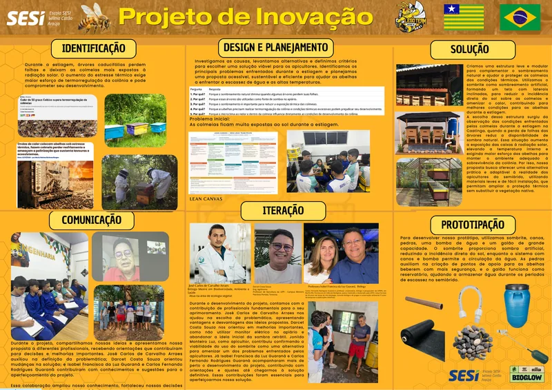
O banner oficial do nosso Projeto de Inovação, apresentado aos juízes da FLL.


A maquete do protótipo
Construímos uma maquete para mostrar a solução inteira de perto: a cobertura de sombrite, o sistema de água e as áreas de cultivo numa mesma estrutura. Toque nos marcadores numerados para ver o papel de cada parte segundo nossa pesquisa.
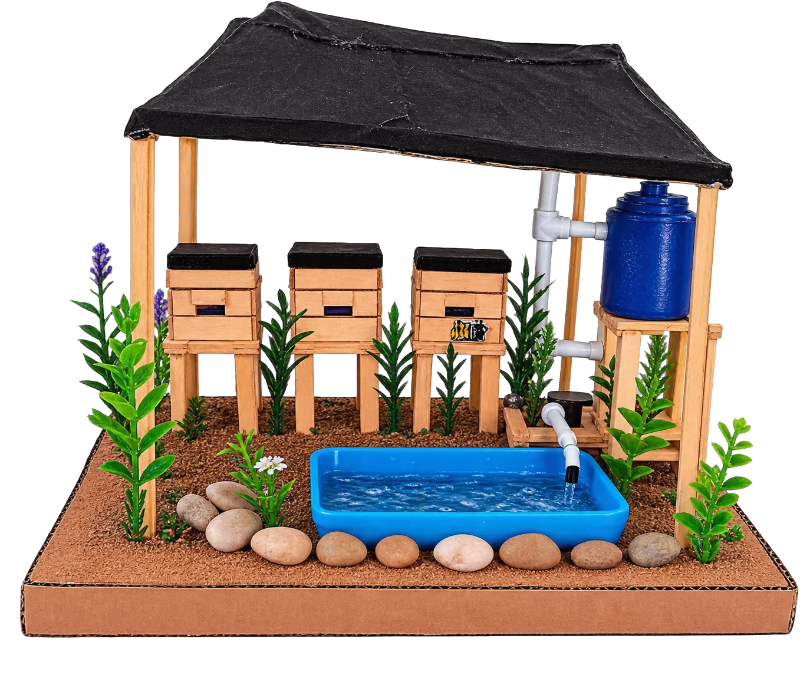
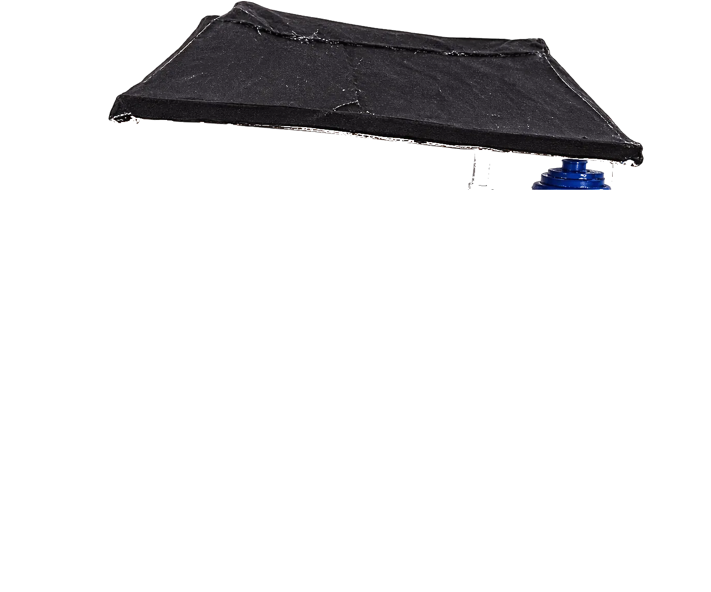
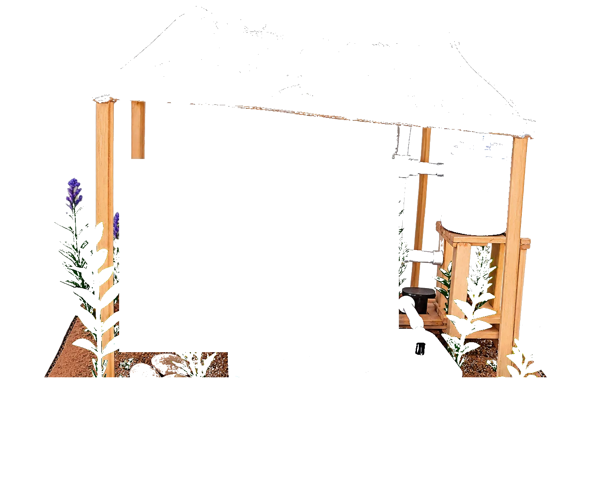
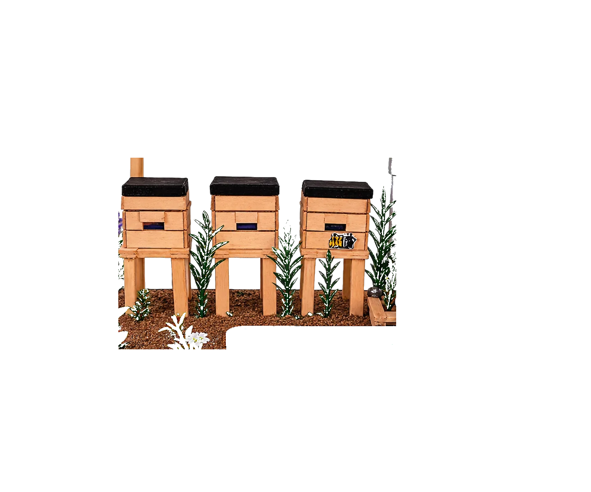
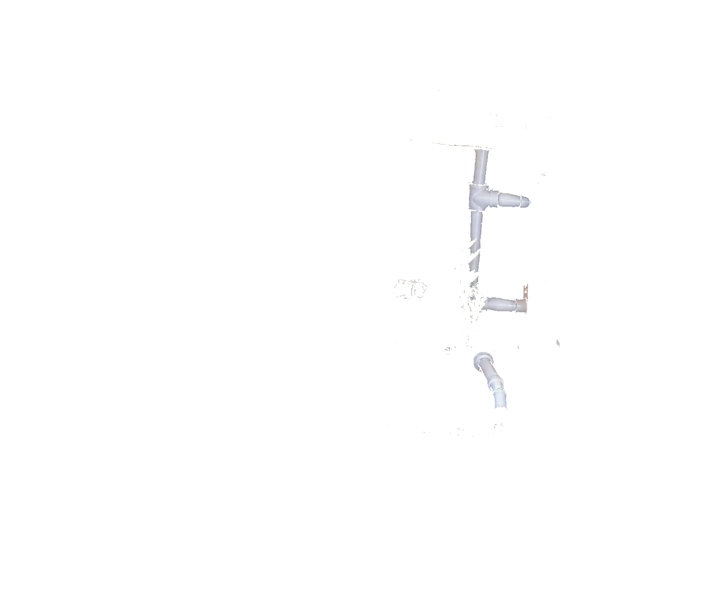
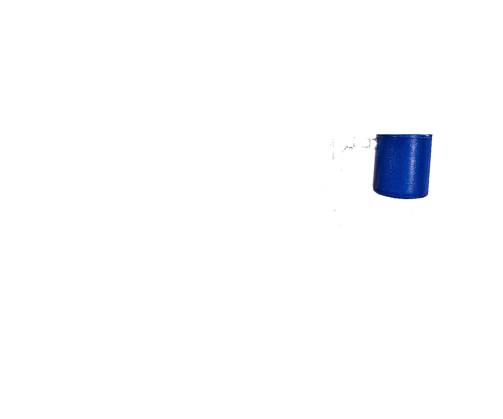
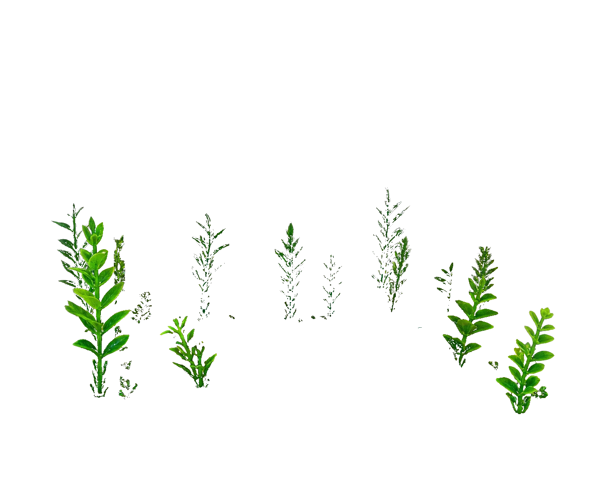
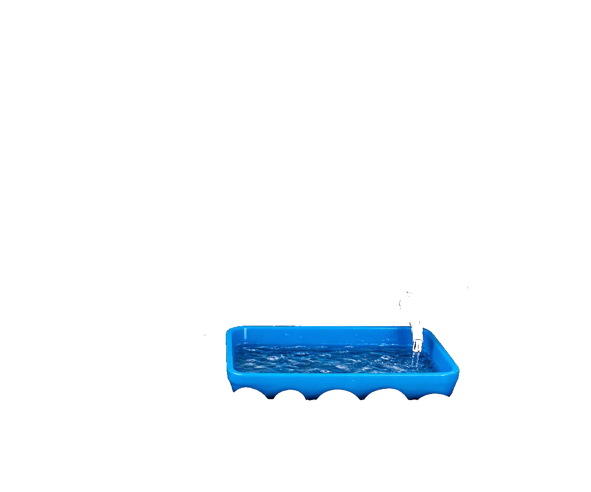
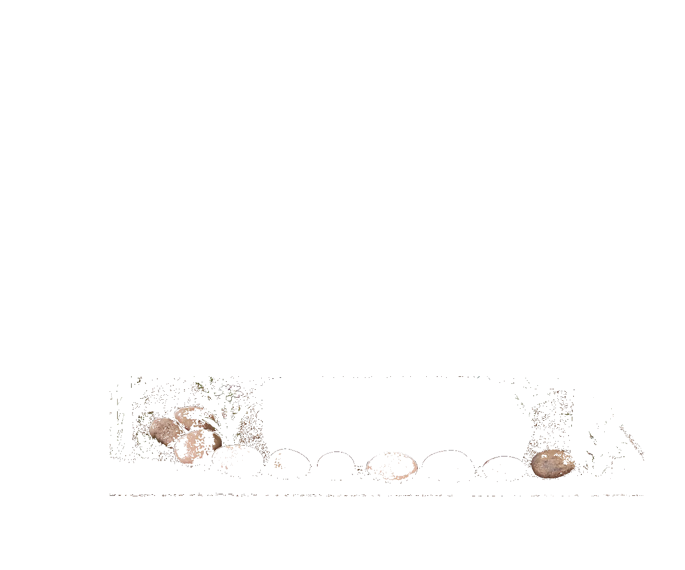
Toque num marcador — na maquete ou na lista — para ler o papel de cada componente segundo nossa pesquisa.
- Tecido esticado no topo da estrutura: cria sombra artificial e reduz a incidência direta do sol, mantendo a circulação de ar por baixo da cobertura.
- Colunas e vigas de madeira que sustentam o sombrite e os demais componentes com resistência e praticidade.
- As três caixas de madeira da maquete representam as áreas de cultivo protegidas pelo sombreamento.
- O sistema com canos e bomba permite a circulação da água, direcionando-a entre o reservatório e o restante da estrutura.
- O galão de grande capacidade funciona como reservatório, armazenando água para os períodos de escassez do semiárido.
- As pedras criam pontos de apoio para as abelhas beberem com mais segurança, sem risco de afogamento.
- A vegetação das caixas representa o cultivo que cresce protegido pelo sombreamento da estrutura.
Referências bibliográficas
- LOPES, Maria Teresa do Rêgo et al. Alternativas de sombreamento para apiários. Pesquisa Agropecuária Tropical, v. 41, n. 3, p. 299-305, 2011. Disponível em: doi.org/10.5216/pat.v41i3.8919.
- MELQUIADES, Catiana da Conceição Vieira; BENDINI, Juliana do Nascimento; MOURA, Sinevaldo Gonçalves de. Internal water supply in Africanized beehives during the dry season in the Brazilian semiarid. Revista Agro@mbiente On-line, v. 14, 2020. Disponível em: doi.org/10.18227/1982-8470ragro.v14i0.6396.
- EMBRAPA. Sistema de Produção de Mel. 2023. Disponível em: infoteca.cnptia.embrapa.br.
- PEREIRA, F. de M. et al. Gargalos tecnológicos e não-tecnológicos. In: VILELA, S. L. de O.; ALCOFORADO FILHO, F. G. (org.). Cadeia produtiva do mel no Estado do Piauí. Teresina: Embrapa Meio-Norte, 2000. cap. 2, p. 30-47.
- PEREIRA, F. de M.; LOPES, M. T. do R.; CAMARGO, R. C. R. de; VILELA, S. L. de O. Sistema de produção de mel. Brasília, DF: Embrapa, 2023.
Robot Design
Uma abelha de LEGO programada para acertar
Nosso robô foi pensado para executar as missões com consistência: alinhar, percorrer e agir com precisão, repetidamente. O visual preto e amarelo representa a abelha, símbolo da equipe, e faz referência a Picos, a Capital do Mel.
O processo foi marcado por montagem, testes, identificação de limitações e mudanças na estrutura, buscando sempre mais compactação, estabilidade e precisão. Construímos cinco versões até chegar ao modelo final.
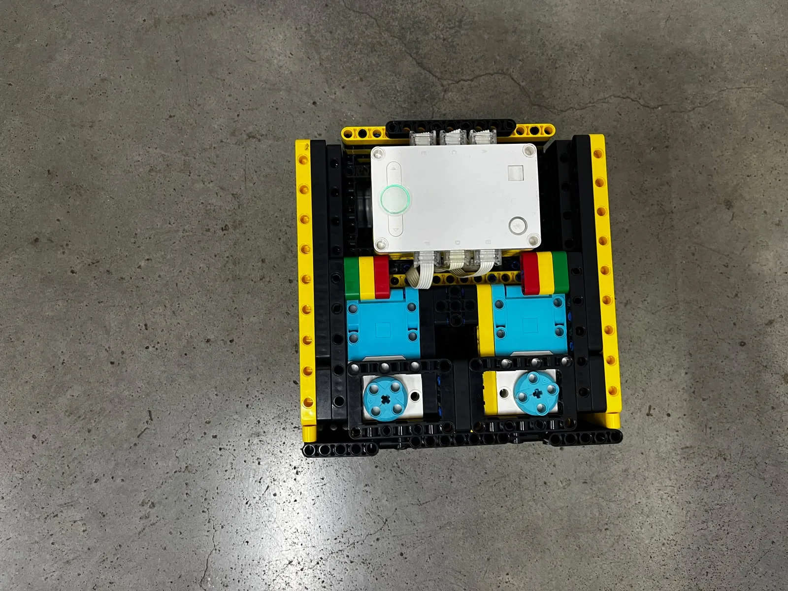
Ficha técnica do modelo final
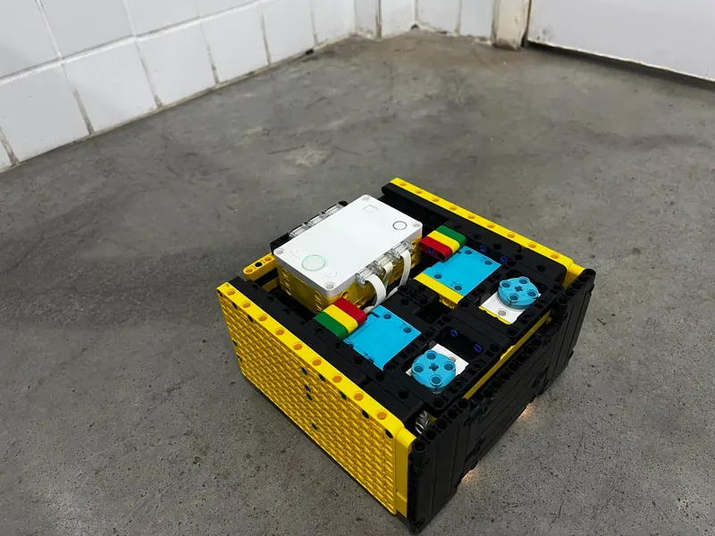
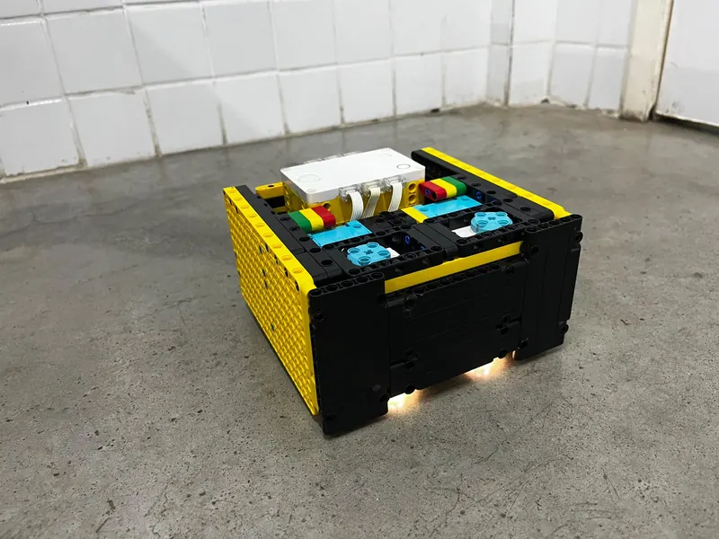
Estratégia de missões
Definimos o percurso com ferramentas de decisão: Score Ponderado, matrizes Esforço x Benefício e Custo x Benefício e a matriz GUT (Gravidade, Urgência e Tendência), avaliando pontuação, dificuldade, tempo, distância e espaço na mesa. Nossa ordem de execução das missões foi:
- 1
- 2
- 3
- 5
- 4
- 8
- 9
- 15
- 6
- 11
- 12
- 14
- 13
- 7
- 10
Na missão 10, o objetivo é apenas não encostar. E o posicionamento das missões 13, 14 e 15 foi escolhido a dedo: a 15 aproveita a frente reta do robô, a 14 fica próxima à base por exigir mais precisão e a 13 se encaixa melhor na trajetória, por ser uma das mais fáceis de executar para a nossa equipe.

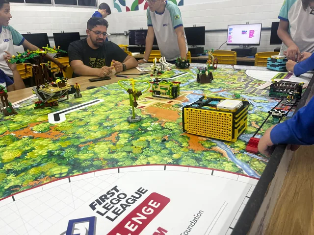
As cinco versões do robô
- Compacto, ágil e leve
- Instável durante as missões
- Espaço limitado para acessórios
Conclusão registrada no diário: inviável para a nossa estratégia de missão — mudamos completamente o robô.
- Estabilidade máxima: centro de gravidade baixo, quase zero risco de tombar em curvas rápidas
- Passagem livre por baixo de estruturas e barras baixas do tapete
- Área horizontal ampla, que dificulta passagens estreitas
- Alcance limitado: missões no alto pedem mecanismos complexos
Foi com essa análise de prós e contras que equilibramos tamanho, estabilidade e funcionalidade no modelo final.
-
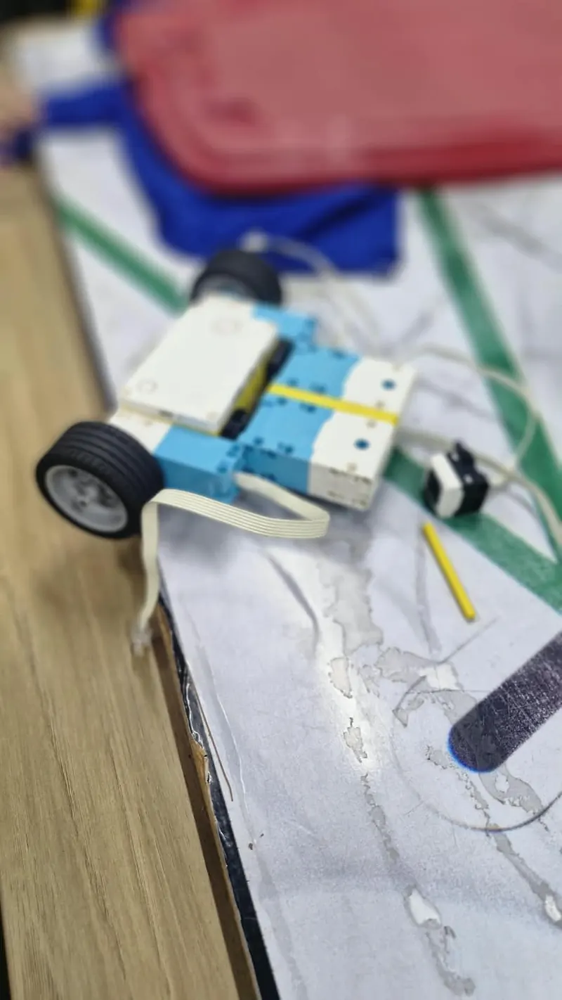
Primeiro protótipo
A base para experimentar a estrutura e entender como as peças se comportavam nos movimentos. Nos testes, as rodas do NXT não se encaixavam nas dimensões planejadas e foram substituídas por rodas do SPIKE, deixando o conjunto mais compacto e adequado às missões.
-
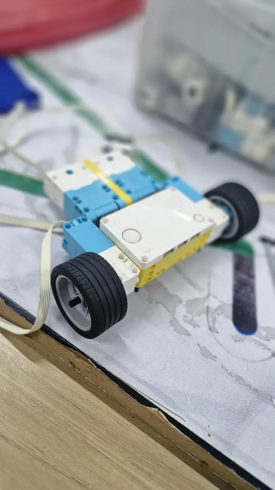
Segundo protótipo
Estrutura organizada com os dois sensores de cor e os motores de locomoção, planejados para o alinhamento antes de cada movimento. Depois vieram os motores da garra, as laterais elevadas em preto e amarelo e o hub SPIKE para executar a programação.
-
Terceiro protótipo
Testamos uma proposta de robô mais largo, de estrutura baixa e centro de gravidade rebaixado. Nos testes, percebemos problemas de equilíbrio e um conjunto grande demais para as missões — e a área horizontal ampla dificultava as passagens estreitas. Foi um aprendizado importante sobre equilibrar o tamanho e a funcionalidade, que orientou o modelo final.
-
Quarta versão
Reiniciamos a construção usando os aprendizados anteriores. Reposicionamos o hub, trocamos as rodas novamente, desta vez pelas EV3 técnicas de borracha, que derrapam menos e deram mais estabilidade, e ajustamos a estrutura em busca de um percurso mais consistente.
-
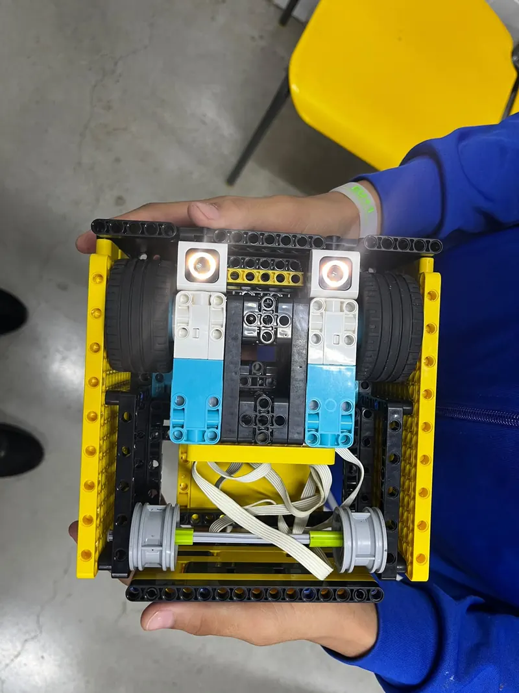
Modelo final
Estrutura preta e amarela com tração dianteira, quatro motores grandes no conjunto, dois de locomoção e dois da garra, dois sensores de cor e o hub SPIKE. A montagem equilibra espaço, estabilidade e funcionalidade para alinhar e cumprir as missões com consistência.
Programação: giro preciso com PID
Programamos o hub SPIKE em Word Blocks. O núcleo da programação é o TURN ON, nosso sistema de controle de giro baseado em PID: ele compara o comportamento esperado com o real e corrige os desvios durante o movimento. Ao programar um giro de 90°, por exemplo, o sistema monitora a rotação e faz ajustes até atingir exatamente o ângulo desejado, reduzindo oscilações nas missões.
- P proporcional: responde ao erro atual
- I integral: considera os erros acumulados
- D derivativo: reduz as oscilações
O procedimento PID com distância é reutilizado pelas rotinas de missão, com as variáveis reais do nosso programa:
- erro
- erro anterior
- integral
- derivada
- Kp
- Ki
- Kd
- correção
- ângulo alvo
- guinada
- motor power
As rotinas de missão no programa levam os nomes que demos às missões: Árvore, Drone, Rocha, Sorte, Casinha de João e Se. Explosiva.
Os testes repetitivos concentraram-se na missão da Árvore, em que enfrentamos dificuldades de posicionamento e alinhamento: com ajustes na programação e nos movimentos, buscamos mais precisão e eficiência até o percurso ficar consistente. Os registros dessa evolução estão nos dias 13, 14 e 15 do nosso diário de bordo.


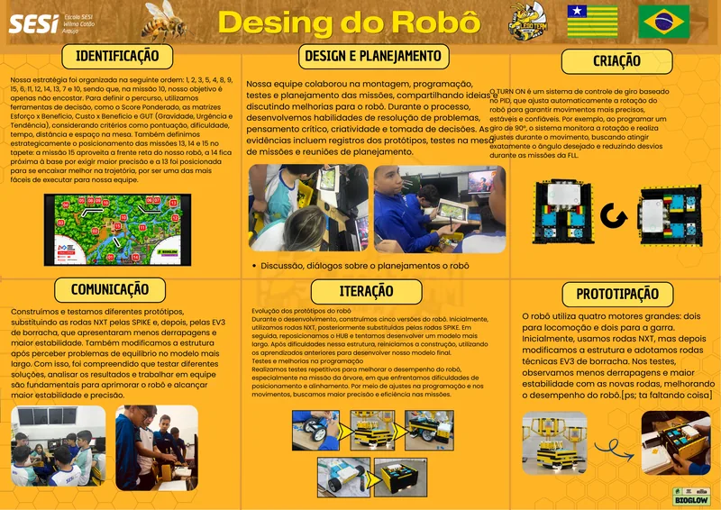
Diário de bordo
A temporada, dia a dia
O nosso caderno de engenharia registrado em datas reais: decisões, testes, visitas e aprendizados de cada dia de trabalho da temporada, entre agosto e outubro de 2026.
-
11/08/2026 Temporada Abertura oficial da temporada
Alinhamento de diretrizes, planejamento estratégico e divisão oficial das frentes operacionais da escola em duas equipes: EC Bots e SESI LEGO Team. Próximos passos registrados: mapeamento de funções, pesquisa para inovação e inventário de peças.
-
22/08/2026 Projeto de Pesquisa Investigação teórica e de campo
Nas semanas seguintes ao pontapé inicial, o grupo mergulhou na fase de investigação do problema: leitura de fontes científicas, conversas e primeiros registros, com aplicação e validação do que foi aprendido.
-
24/08/2026 Design do Robô O robô inicial
Primeira estrutura construída: compacta, ágil e leve — mas instável e com espaço limitado para acessórios. O registro do dia é direto: inviável para a nossa estratégia de missão, então mudamos completamente o robô.
-
03/09/2026 Design do Robô A estrutura do robô final
Definição da filosofia da estrutura final: baixa e estável, com centro de gravidade rebaixado e passagem livre por baixo de barras do tapete. As contrapartidas registradas: área horizontal ampla e alcance limitado nas missões altas.
-
07/09 a 14/09/2026 Projeto de Pesquisa A "seca verde" e o pivô
Ponto de partida da pesquisa: os impactos gerais da seca na vegetação e no alimento das abelhas. A conclusão do período mudou o projeto: resolver a "seca verde" era amplo demais para um protótipo de engenharia — pivô para um foco específico.
-
11/09/2026 Design do Robô Estratégia de missão
Definição da estratégia de missões: percurso, ordem de execução e posicionamento das missões no tapete, com apoio das ferramentas de decisão aprendidas na liga.
-
07/09/2026 Projeto de Pesquisa O novo foco específico
O problema ganhou contorno: o estresse térmico das colmeias pela falta de sombra natural quando as árvores perdem as folhas no semiárido — um gargalo pontual e prático, atacável por um protótipo.
-
Projeto de Pesquisa Contato com os especialistas
Abertura das conversas com apicultores e especialistas: José Carlos de Carvalho Arraes, Darcet Costa Souza, Jonildo Monteiro Luz e Isabel Francisca da Luz Guaraná.
-
07/10 e 18/10/2026 Projeto de Pesquisa Simplificação da solução
Orientações de Darcet Costa Souza (UFPI) mudaram o protótipo: corte do monitor elétrico no apiário por segurança e viabilidade, fim da sombra retrátil e direção para uma estrutura fixa e prática — os rumos da solução final.
-
13/10/2026 Desempenho do Robô Chegada do tapete
O tapete oficial de missões chegou — e foi direto para a mesa de testes, com a equipe reunida para os primeiros percursos reais da temporada.
-
15/10/2026 Projeto de Pesquisa Visita à apicultura de Jonildo
Dia de campo no apiário: Jonildo Monteiro Luz validou o uso do sombrite para amenizar o calor, aportou a visão prática de quem cria abelhas e aprovou a alternativa fixa no lugar da sombra retrátil. As fotos da visita estão no trabalho de campo do projeto.
-
Desempenho do Robô Programação com PID
Construção da estrutura PID na programação: leitura constante dos sensores, cálculo do erro e ajuste automático da velocidade dos motores para precisão no trajeto.
-
Desempenho do Robô O funcionamento do PID
Registro do funcionamento do PID na programação: estudo dos blocos, do fluxo de correção e do comportamento real do robô nos testes.
-
Desempenho do Robô Nossa inovação
Equipado com controle PID, o robô executa giros perfeitos e suaves. A tecnologia garante máxima precisão e estabilidade na execução de trajetórias complexas, com total controle.
-
Projeto de Pesquisa A solução final do projeto
O capítulo que fecha a pesquisa: uma cobertura de sombrite com sistema de água, garantindo o controle térmico direto da caixa da colmeia.


Core Values: como vivemos os valores da FLL
Os Core Values são o coração da FIRST LEGO League. Não os tratamos como uma lista: cada valor abaixo tem um exemplo real do nosso processo nesta temporada.
-
Trabalho em equipe
Montagem, programação, testes e planejamento das missões foram compartilhados, com ideias discutidas e decisões tomadas em conjunto.
-
Inclusão
Cada integrante participou das pesquisas, dos registros e da apresentação, cada um contribuindo do seu jeito, com a função que assumiu.
-
Descoberta
Aprendemos ciência com a Embrapa e com as universidades, e aprendemos a realidade do apiário na visita de campo a Picos.
-
Inovação
Unimos sombreamento e água em uma mesma estrutura, combinando funções e adaptando a solução às necessidades do semiárido.
-
Impacto
A solução nasceu de um problema observado perto de nós e foi desenhada para os apicultores da nossa região.
-
Diversão
Cinco versões do robô depois, cada evolução virou motivo de celebração, e as missões ganharam nomes como Casinha de João e Sorte.
Galeria
O robô, os protótipos, os registros da temporada e os banners oficiais. Clique em uma foto para ver em tamanho grande.

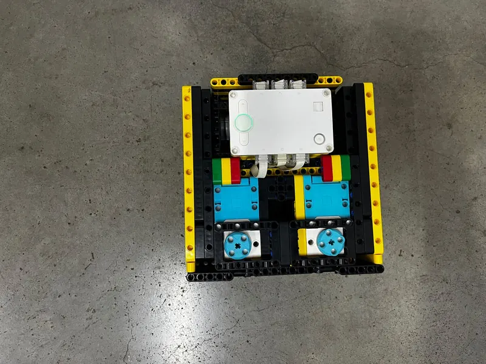


Agradecimentos e contato
A quem agradecemos
- Escola SESI Wilma Catão Araújo pelo espaço, apoio e incentivo à equipe.
- Jonildo Monteiro Luz, Darcet Costa Souza, Isabel Francisca da Luz Guaraná, José Carlos de Carvalho Arraes, Carlos Fernando Rodrigues Guaraná e José Breno da Cruz pelas conversas, visitas e orientações que moldaram o projeto.
- Embrapa e UFPI pela pesquisa que fundamentou nossa solução.
- FIRST LEGO League pela temporada que nos desafia a aprender fazendo.
A completar: patrocinadores e apoiadores da equipe ainda não constam no material enviado.
Fale com a equipe
Queremos trocar ideias com outras equipes, apicultores e quem se interessa por robótica e pela proteção das abelhas.
- Instagram @sesilegoteampi_
- Escola SESI Wilma Catão Araújo, Picos, PI